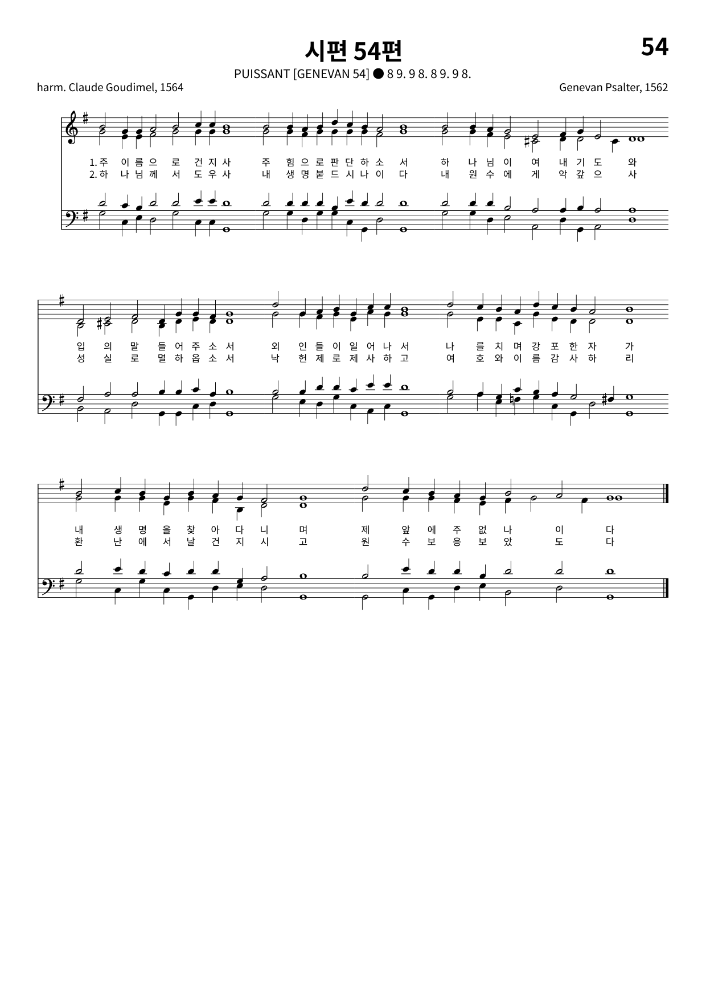

Psalm 54
PUISSANT [GENEVAN 54] · 8 9. 9 8. 8 9. 9 8.
English title: O God, Save Thou Me by Thy Name
Tune: Genevan Psalter, 1562 · Harmony: Claude Goudimel, 1564 · Lyrics: Korean adaptation of Psalm 54 from the Korean Revised Version (AI draft adaptation · not yet theologically reviewed) · 2 stanzas
Score PDF MusicXML (for printing) MusicXML (for accompaniment, with prelude and repeats) Read Psalm 54 (Korean Revised Version)
Score
← Psalm 53 ListAccompaniment (in preparation)Psalm 55A →
Lyrics (Korean)
Stanza 1 (Ps. 1~3절)
주 이름으로 건지사
주 힘으로 판단하소서
하나님이여 내 기도와
입의 말 들어 주소서
외인들이 일어나서
나를 치며 강포한 자가
내 생명을 찾아 다니며
제 앞에 주 없나이다
주 이름으로 건지사
주 힘으로 판단하소서
하나님이여 내 기도와
입의 말 들어 주소서
외인들이 일어나서
나를 치며 강포한 자가
내 생명을 찾아 다니며
제 앞에 주 없나이다
Stanza 2 (Ps. 4~7절)
하나님께서 도우사
내 생명 붙드시나이다
내 원수에게 악 갚으사
성실로 멸하옵소서
낙헌제로 제사하고
여호와 이름 감사하리
환난에서 날 건지시고
원수 보응 보았도다
하나님께서 도우사
내 생명 붙드시나이다
내 원수에게 악 갚으사
성실로 멸하옵소서
낙헌제로 제사하고
여호와 이름 감사하리
환난에서 날 건지시고
원수 보응 보았도다